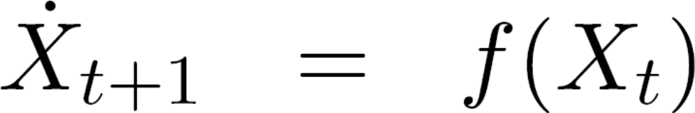

OdeSolver Tutorial
 |
 |
| Truth and initial cylinders | Simulation results |
- Static integration scheme,
- Explicit integration schemes,
- Implicit integration schemes.
Before going any further, it is important to know that state vectors in SOFA are saved in a component called "State" (see chapter "State" in the documentation). For instance, when mechanical models are being solved, the user needs to add a "MechanicalState" component in the graph. Inside the component, the format of storage for the state vector is a structure called MultiVector. The size and the nature of the degrees of freedom is chosen by setting a "template" in the State component. Let us now go into details about the different ODE solvers in SOFA.
-
First, the static integration is an integration which does not take the time into account. Such a static integration can be useful for checking the convergence of algorithms.
Furthermore, different dynamic solvers have been implement in SOFA. Unlike static solvers, these solvers do take the dynamics of the system into account. However, depending on the aim of the computation, the solver has to be carefully chosen. Let us review the basic differences between explicit and implicit solvers.
|  |
-
Concerning the explicit solvers, they compute the new state variables from the state variables at the previous step. The advantage is that explicit solvers can be fast, but the stability of the solver is not always granted. Very small time steps can be required to get satisfactory accuracy. Moreover, such solvers are not suitable for every simulation. For example, explicit solvers do not compute cyclic loadings correctly, but could be advised in case of soft or high-mass objects.
 |
Concerning implicit solvers, they compute the new state variables by solving an equation involving the previous state variables and the new ones. In contrast, implicit solvers are very stable (without conditions on the time step) and therefore work with larger time steps. The drawback of such a method is that it is more time consuming. For example, implicit solvers would be advised for stiff or low-mass objects.
-
Finally, it must be pointed out that explicit and implicit solvers are not the only way to solve ODEs. Some other solvers do exist, such as semi-implicit (also called explicit-implicit solvers) solvers. Such solvers solve a part of the equation explicitly and the other part implicitly. With such solvers using data from different steps, the user may face the need to save some state vectors during several time steps. More details about the implementation of these solvers are given in the documentation: chapter "State", and chapter "Solvers".